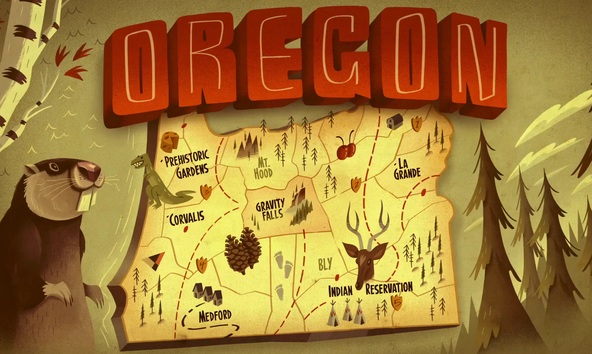
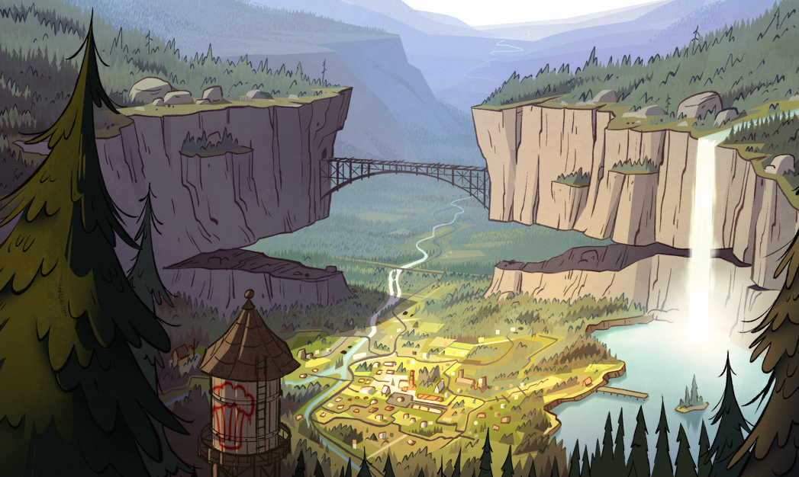

Welcome!


Gravity Falls, Oregon, is a mysterious, sleepy, small town of eastern Oregon, where there are many supernatural occurrences. It was founded by Quentin Trembley, but in an attempt to cover it up was said to be founded by Nathaniel Northwest. It's where Stan Pines lives and runs the Mystery Shack, a tourist trap which overcharges unlucky visitors for a glimpse at the world's most bizarre museum. 12-year-old twin siblings Dipper and Mabel Pines, who are Stan's greatnephew and greatniece, are sent to stay with Stan for the summer, which leads them to discover the different yet curious wonders of Gravity Falls.